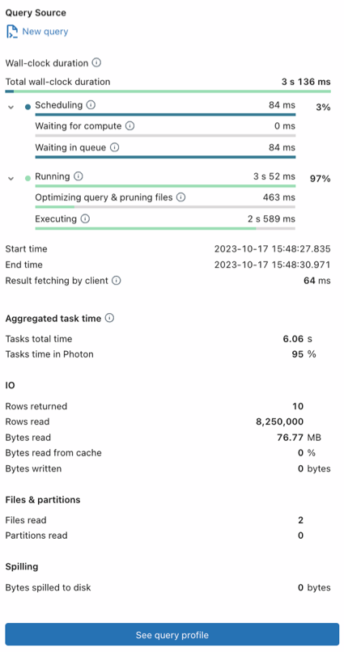

Query profile
You can use a query profile to visualize the details of a query execution. The query profile helps you troubleshoot performance bottlenecks during the query’s execution. For example:
You can visualize each query task and its related metrics, such as the time spent, number of rows processed, rows processed, and memory consumption.
You can identify the slowest part of a query execution at a glance and assess the impacts of modifications to the query.
You can discover and fix common mistakes in SQL statements, such as exploding joins or full table scans.
Important
The time recorded in query history for a SQL query is only the time the SQL warehouse spends actually executing the query. It does not record any additional overhead associated with getting ready to execute the query, such as internal queuing, or additional time related to the data upload and download process.
Requirements
To view a query profile, you must either be the owner of the query or you must have the Can Manage permission on the SQL warehouse that executed the query.
View a query profile
After running a query in the SQL editor or in a notebook, you can open the query profile by clicking the elapsed time at the bottom of the output.
You can also view the query profile from the query history as follows:
View query history.
Click the name of a query. An overview of query metrics appears.
Click See query profile.
Note
If Query profile is not available is displayed, no profile is available for this query. A query profile is not available for queries that run from the query cache. To circumvent the query cache, make a trivial change to the query, such as changing or removing the
LIMIT.To view the query profile in graph view (the default), click Graph view. To view the query profile as a tree, click Tree view.
Graph view is optimized for visualizing how data flows from one node to another.
Tree view is optimized for quickly finding issues with the query’s performance, such as identifying the longest-running operator.
In graph view or tree view, you can click one of the tabs at the top of the page to view details about each of the query’s tasks.
Time spent: The sum of execution time spent by all tasks for each operation.
Rows: The number and size of the rows affected by each of the query’s tasks.
Peak memory: The peak memory each of the query’s tasks consumed.
Note
Some non-Photon operations are executed as a group and share common metrics. In this case, all subtasks have the same value as the parent task for a given metric.
In graph view, if a task has sub-tasks, click a node to show its details. In tree view, you can click > to expand it.
Each task’s operation is shown. By default, tasks and metrics for some operations are hidden. These operations are unlikely to be the cause of performance bottlenecks. To see information for all operations, and to see additional metrics, click
 at the top of the page, then click Enable verbose mode. The most common operations are:
at the top of the page, then click Enable verbose mode. The most common operations are:Scan: Data was read from a datasource and output as rows.
Join: Rows from multiple relations were combined (interleaved) into a single set of rows.
Union: Rows from multiple relations that use the same schema were concatenated into a single set of rows.
Shuffle: Data was redistributed or repartitioned. Shuffle operations are expensive with regard to resources because they move data between executors on the cluster.
Hash / Sort: Rows were grouped by a key and evaluated using an aggregate function such as
SUM,COUNT, orMAXwithin each group.Filter: Input is filtered according to a criteria, such as by a
WHEREclause, and a subset of rows is returned.(Reused) Exchange: A Shuffle or Broadcast Exchange is used to redistribute the data among the cluster nodes based on the desired partitioning.
Collect Limit: The number of rows returned was truncated by using a
LIMITstatement.Take Ordered And Project: The top N rows of the query result were returned.
To view the query profile in the Apache Spark UI, click
at the top of the page, then click Open in Spark UI.To close the imported query profile, click X at the top of the page.
For more details about the information available in the query profile, see View details about the query profile.
View details about the query profile
The query profile lists the query’s top-level tasks in reverse order, with the last task listed first. On the left, three columns show the task sequence, the name of the operation, and a graph of the selected metric for that task. Follow these steps to familiarize yourself with the different parts of the query profile.
Click Time to see the duration of each subtask.
Click Rows to see the number and size of rows returned by the query.
Click Memory to see the memory consumed by each query task. If the task has subtasks, you can click > to see details about each subtask.
On the right, click Overview to see the query’s SQL statement, status, start and end times, duration, the user who ran the query, and the warehouse where the query was executed.
Click a task to view details about the task, such as the task’s description and metrics about the task’s duration, memory consumed, number and size of rows returned, and lineage.
To close subtask details, click X.
Click the name of the SQL warehouse to go to that warehouse’s properties.
To view the query profile in the Apache Spark UI, click
at the top of the page, then click Open in Spark UI.To close the query profile, click X at the top of the page.
Import a query profile
To import the JSON for a query profile:
View query history.
Click the kebab menu
on the upper right, and select Import query profile (JSON).In the file browser, select the JSON file that was shared with you and click Open. The JSON file is uploaded and the query profile is displayed.
When you import a query profile, it is dynamically loaded into your browser session and does not persist in your workspace. You need to re-import it each time you want to view it.
To close the imported query profile, click X at the top of the page.
Next steps
Learn about accessing query metrics using the query history API
Learn more about query history